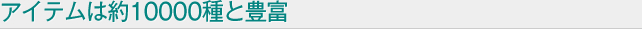

HOME > 選ばれる理由
「山田為商店」は、約60年前に始めた会社です。今も昔も変わらぬ理念は「お客様、第一」。創業当初は電線のみを扱う商社でしたが、お客様からの「電気絶縁材料は扱っていないのか」という声で両方を扱うようにするなど、お客様のニーズに応えながら成長してきました。現在、お付き合いのある得意先は約400社。なかには40年以上もお付き合いさせて頂いている会社様もあります。

当社が扱っているアイテムは約10000種。電線と電気絶縁材料などの製品を一度に発注でき、迅速に全ての製品をお届けすることができます。メーカーに在庫が少ない製品も豊富に取り揃えていますので、製品がなかなか見つからないというお客様は、一度お問い合わせください。在庫対応品は必要な個数だけ注文いただけます。製品を余分に購入してしまうリスクを最小限に抑えられます。
当社は、電線および電気絶縁材料を扱うだけではなく、昭和30年代から工場を設け、合成樹脂加工にも着手しています。オーダーは製品一つから可能です。熟練した技術者が図面の相談や素材のご提案なども行ないます。「こんな製品があれば…」という理想を形にいたしますので、気軽にお電話ください。